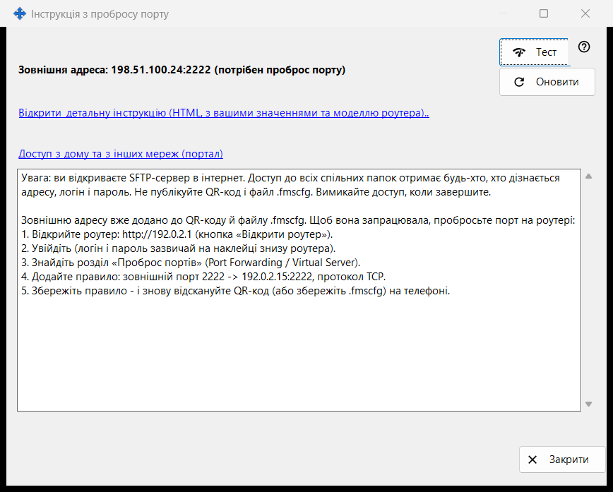
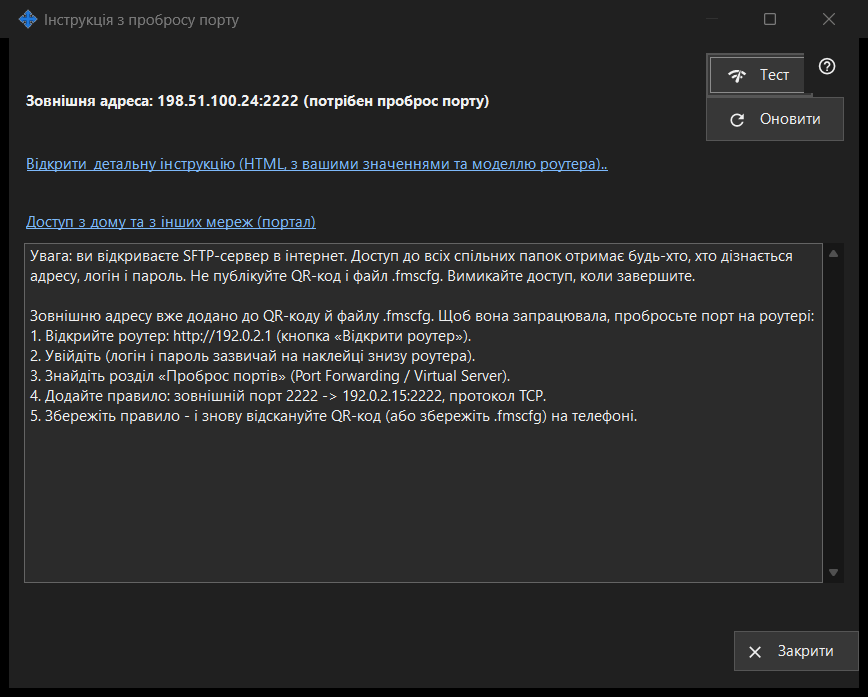

Інструкція з пробросу порту
Призначення
Допомагає зробити роздачу доступною ззовні домашньої мережі. Показує зовнішню адресу та те, чи порт відкрито автоматично, чи його потрібно прокинути на роутері, і пропонує перевірку та докладну інструкцію. Відкривається кнопкою «Як налаштувати доступ через інтернет» головного вікна.


Порядок дій
- Спершу почніть роздачу; інакше вікно попросить про це.
- Прочитайте рядки стану: доступно, за CGNAT або потрібен проброс порту.
- Якщо потрібен проброс, відкрийте детальну інструкцію й створіть правило на роутері.
- Натисніть «Тест», щоб перевірити адресу з цього ПК.
- Підтвердьте з телефона через мобільний інтернет при вимкненому Wi-Fi.
Елементи вікна
Стан
Вікно визначає зовнішню адресу й показує одне з повідомлень: «Доступно з інтернету: ..», «Зовнішня адреса: .. (потрібен проброс порту)», «Зовнішня адреса невідома - дізнайтеся в роутері.» або «За CGNAT - ззовні недоступно.». Коли порт відкрито автоматично (UPnP), налаштовувати роутер не потрібно, але підтвердити, що все працює, може лише телефон через мобільний інтернет. «Оновити» повторює визначення.
Роутер та інструкції
Рядок роутера показує його адресу або «Визначаємо роутер..», поки триває пошук. Посилання «Відкрити детальну інструкцію (HTML, з вашими значеннями та моделлю роутера)..» відкриває локальну HTML-інструкцію; якщо її не вдається відкрити, вікно повідомляє про це. Посилання «Доступ з дому та з інших мереж (портал)» відкриває у браузері відповідну сторінку порталу довідки.
Тест
Перевіряє зовнішню адресу з цього ПК і повідомляє «SFTP-сервер доступний: ..», «Порт відкрито, але SFTP не відповів: ..», закрите з'єднання (можливо, через ліміт підключень) або відсутність відповіді. Результат не остаточний: багато роутерів не пускають запит на власну зовнішню адресу зсередини, тож надійна перевірка - телефон через мобільний інтернет.
Безпека
Відкриття SFTP в інтернет дає доступ до кожної спільної папки будь-кому, хто дізнається адресу, логін і пароль. Не публікуйте QR-код і файл .fmscfg, а коли закінчите, вимкніть роздачу. «Закрити» виходить із вікна.
Налаштування менеджера · Налаштування спільного доступу SFTP · Налаштування сервера обміну